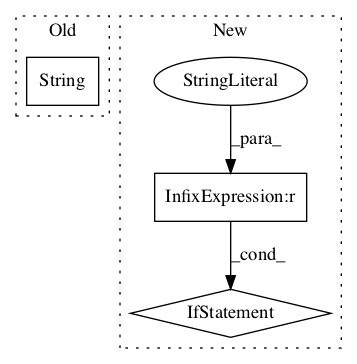

0c816cbbc8b607d2edc64888bfd7bac329699953,python/timeseries/timeseries_regression.py,,find_anomalies_with_regression,#Any#Any#Any#Any#Any#Any#,19

Before Change
pred_points = scaler.inverse_transform(pred_points)
pred_points = np.vstack([np.zeros(shape=(1, ts.y.shape[1]), dtype=np.float32), pred_points])
pred_points = invert_difference_series(pred_points, data[[0], :])
logger.debug("inv_diffs:(%s)\n%s" % (str(pred_points.shape), str(pred_points)))
scores = np.abs(data[n_tr:, 0] - pred_points[n_tr:, 0])
After Change
max_features="auto", max_leaf_nodes=None, min_impurity_decrease=0.0,
min_impurity_split=None, bootstrap=True, oob_score=False, n_jobs=1,
random_state=None, verbose=0, warm_start=False)
elif reg_type == "nntf":
// use tensorflow
mdl = MLPRegressor_TF(x.shape[1], 100, 1, batch_size=20, shuffle=True,
n_epochs=200, l2_penalty=0.001)
In pattern: SUPERPATTERN
Frequency: 3
Non-data size: 3
Instances
Project Name: shubhomoydas/ad_examples
Commit Name: 0c816cbbc8b607d2edc64888bfd7bac329699953
Time:
Author: null
File Name: python/timeseries/timeseries_regression.py
Class Name:
Method Name: find_anomalies_with_regression
Project Name: NeuromorphicProcessorProject/snn_toolbox
Commit Name: 3523a61256c3040aa3f4fd3fc579511f85169212
Time:
Author: null
File Name: tests/conftest.py
Class Name:
Method Name: _datapath
Project Name: NervanaSystems/coach
Commit Name: a1c56edd98898ed25db9c6ed1e05b50a0a85e097
Time:
Author: null
File Name: rl_coach/memories/non_episodic/differentiable_neural_dictionary.py
Class Name:
Method Name: load_dnd